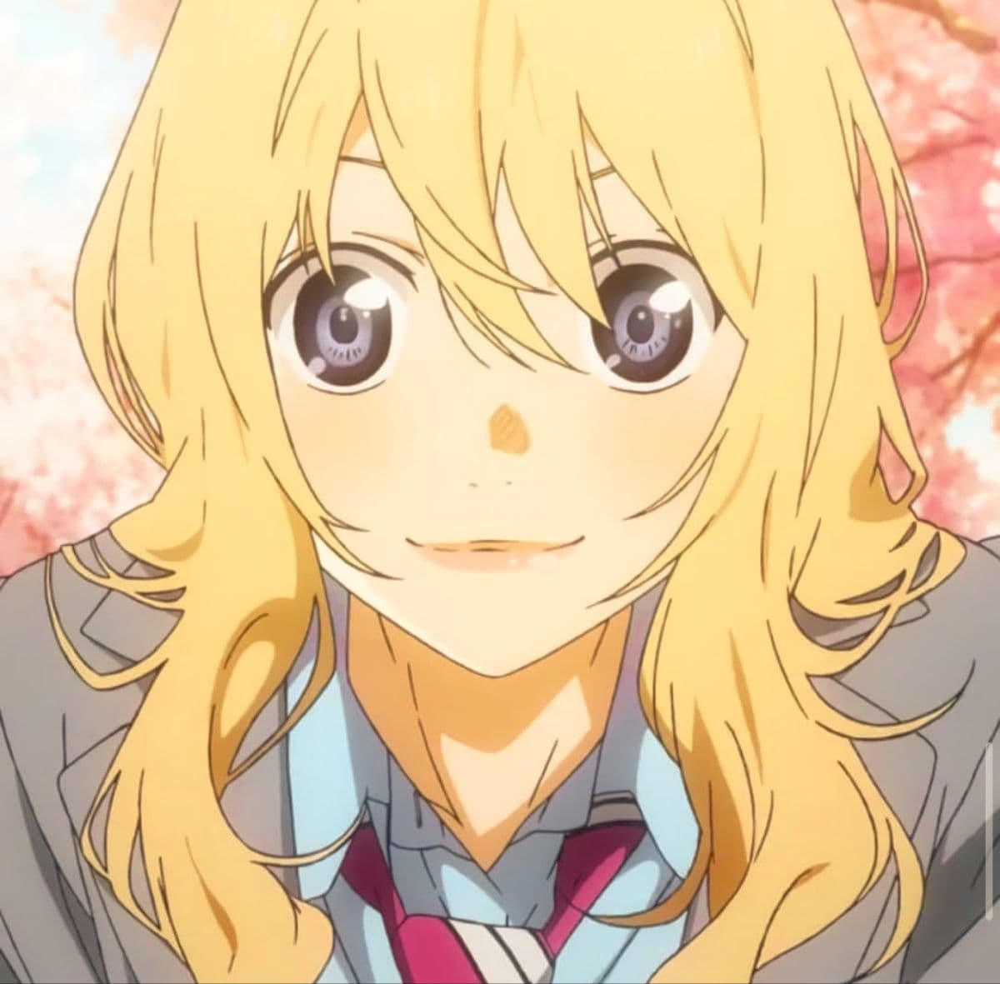

Kaori was a free-spirited violinist whose primary goal was to play music that would reach the hearts of her audience. After watching a young Kousei Arima perform at a recital when she was five, she was so moved that she swapped her piano for a violin, dreaming of one day performing a duet with him. Known for her unconventional style, she often ignored the score's strict instructions to infuse her own soul into the music—a rebellion born from the knowledge that her time was limited. She "lied in April" by pretending to have a crush on Watari just to get closer to Kousei and pull him back into the world of music.

- Beethoven: Violin Sonata No. 9 "Kreutzer": Her explosive debut performance where she completely reinterpreted the score.
- Saint-Saëns: Introduction and Rondo Capriccioso: The iconic, high-energy duet she performed with Kousei.
- Kreisler: Liebesleid (Love's Sorrow): The piece she chose for their gala concert to help Kousei face his past.
- Chopin: Ballade No. 1 in G Minor: The final piece where her spirit accompanies Kousei in his imagination.


Kosei Arima: Her "Friend A" and the pianist she dragged out of his monochrome world back into the light of music.
Tsubaki Sawabe & Ryota Watari: Her close friends who helped facilitate her "lie" so she could get closer to Kosei.
Influence: She taught Kosei that music isn't about perfect reproduction of a score, but about reaching others. Her "liberated" style influenced a whole generation of young musicians to play with heart rather than just technique.
Kaori’s legacy is defined by the phrase, "Will it reach them?" She didn't care about trophies or grades; she cared about being remembered. By breaking the rules of classical performance, she proved that music is a living, breathing thing. Her greatest "work" wasn't a recording, but the restoration of Kosei Arima’s ability to hear the colors of the world again. She lives on in every note played with soul rather than just precision.